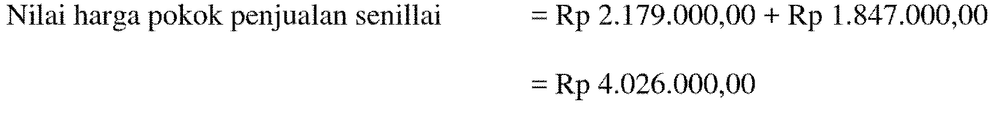

Selamat Datang
Map-Akuntansi
(Media Pembelajaran Akuntansi)
Sistem Pencatatan dan Penilaian Persediaan pada Perusahaan Dagang
Masuk
.png)


Materi


Materi 1
PENGERTIAN PERSEDIAAN
Persediaan adalah aktiva berwujud yang dimiliki suatu perusahaan dengan tujuan:
- Dijual dalam kegiatan normal perusahaan:
- Persediaan barang dagangan
- Persediaan barang jadi
- Dalam proses produksi untuk dijadikan produk akhir yaitu barang dalam proses.
- Digunakan dalam proses produksi untuk dijadikan produk akhir yaitu persediaan bahan baku.
Materi 2
SISTEM PENCATATATAN PERSEDIAAN
a. Sistem Periodik
Sistem periodik yaitu pada setiap akhir periode dilakukan perhitungan secara phisik untuk menentukan jumlah persediaan akhir. Perhitungan tersebut meliputi pengukuran dan penimbangan barang-barang yang ada pada akhir suatu periode untuk kemudian dikalikan dengan suatu tingkat harga/biaya.
b. Sistem Perpetual
Sistem perpetual yaitu melakukan pembukuan atas persediaan secara terus menerus yaitu dengan membukukan setiap transaksi persediaan baik pembelian maupun penjualan.
c. Perbedaan Sistem Periodik dan Sistem Perpetual
| No. | Sistem Periodik | Sistem Perpetual |
| 1. | Pembelian barang dagangan dicatat dengan mendebit rekening pembelian. | Pembelian barang dagangan dicatat dalam akun persediaan barang dagangan. |
| 2. | Hasil penjualan dicatat dalam rekening penjualan dan pada waktu penjualan harga pokok penjualan tidak dicatat dijurnal. | Hasil penjualan dicatat dalam rekening penjualan dan pada waktu penjualan harga pokok penjualan dicatat/dijurnal. |
| 3. | Nilai persediaan pada akhir periode tidak dapat diketahui sehingga perlu melakukan perhitungan fisk persedian: dibuat penyesuaian pada akhir periode | Walaupun nilai persediaan akhir dapat diketahui, penghitungan fisik tetap harus dilakukan untuk mencocokkan persediaan akhir menurut penghitungan fisik dengan catatannya. |
Perbedaan antara sistem pencatatan periodik dan sistem pencatatan perpetual dapat dilihat secara jelas dalam penjurnalan transaksi yang berkaitan dengan penjualan dan pembelian barang dagangan. Berikut ini perbedaan jurnal kedua metode tersebut:
Pembelian Barang Dagangan Secara Tunai
Contoh:
PT. Abadi membeli barang dagangan secara tunai sebesar Rp1.200.000,00
Pembelian Barang Dagangan Secara Kredit
Contoh:
PT. Abadi membeli barang dagangan secara kredit sebesar Rp2.250.000,00, dengan termin 2/10, n/30.
Retur Pembelian Barang Dagangan secara Tunai

Contoh:
PT. Abadi mengembalikan barang yang tidak sesuai dengan pesanan atas pembelian tunai sebesar Rp150.000,00.
Retur Pembelian Barang Dagangan secara Kredit
Contoh:
PT. Abadi mengembalikan barang yang cacat atas pembelian kredit sebesar Rp100.000,00.
Pembayaran Biaya Angkut Pembelian
Contoh:
Dibayar biaya angkut pembelian seberar Rp350.000,00.
Pembayaran Utang tanpa potongan
Contoh:
Dibayar utang dagang sebesar Rp700.000,00
Pembayaran Utang dengan potongan
Contoh:
Dibayar utang dagang sebesar Rp1.200.000,00 dengan potongan 2%.
Perhitungan:
| Utang Dagang | Rp1.200.000,00 |
| Potongan Pembelian | |
| (2% x Rp1.200.000,00 = Rp24.000) | RP 24.000,00 |
| Kas yang dibayarkan | Rp1.176.000,00 |
Penjualan Barang Dagangan secara Tunai
Contoh:
PT. Abadi menjual barang dagangan seharga Rp600.000,00 dengan Harga Pokok Penjualan Rp375.000,00
Penjualan Barang Dagangan secara Kredit
Contoh:
Dijual barang dagangan secara kredit sebesar Rp1.500.000,00, dengan termin 2/10, n/30. Harga Pokok Penjualan Rp1.115.000,00
Retur Penjualan Barang Dagangan secara Tunai
Contoh:
Diterima kembeli barang dagangan yang dijual secara tunai sebesar Rp250.000,00 dengan harga pokok penjualan sebesar Rp210.000,00

Retur Penjualan Barang Dagangan secara Kredit
Contoh:
Diterima kembeli barang dagangan yang dijual secara kredit sebesar Rp125.000,00 dengan harga pokok penjualan sebesar Rp95.000,00
Pembayaran Biaya Angkut Penjualan
Contoh:
Dibayar biaya angkut penjualan seberar Rp200.000,00.
Penerimaan piutang dagang tanpa potongan
Contoh:
Diterima pelunasan piutang dagang sebesar Rp 600.000,00
Penerimaan piutang dagang pada periode potongan
Contoh:
Diterima pelunasan piutang dagang sebesar Rp 2.200.000,00 dengan potongan 2%.
Perhitungan:
| Piutang Dagang | Rp2.200.000,00 |
| Potongan Penjualan | |
| (2% x Rp2.200.000,00 = Rp44.000) | RP 44.000,00 |
| Kas yang diterima | Rp2.156.000,00 |
Jurnal penyesuaian akhir periode
Contoh:
Diketahui data terkait persediaan pada akhir periode yaitu:
| Persediaan awal | Rp 1.200.000,00 |
| Pembelian | Rp13.750.000,00 |
| Retur pembelian | Rp 230.000,00 |
| Potongan pembelian | Rp 550.000,00 |
| Biaya angkut pembelian | Rp 700.000,00 |
| Persediaan akhir | Rp 1.455.000,00 |
| Persediaan wal | Rp1.200.000,00 |
| Pembelian | Rp13.750.000,00 |
| Biaya angkut pembelian | Rp 700.000,00 |
| Retur pembelian | (Rp 230.000,00) |
| Potongan pembelian | (Rp 550.000,00) |
| Barang yang tersedia untuk dijual | Rp13.670.000,00 |
| Persediaan akhir | Rp1.455.000,00 |
| Harga pokok pembelian | Rp12.215.000,00 |
Materi 3
METODE PENILAIAN PERSEDIAAN
Penilaian persediaan dilakukan untuk memperoleh informasi terkait dengan persediaan antara lain persediaan yang masih ada di perusahaan, persediaan yang dibeli dan persediaan yang dijual oleh perusahaan serta alokasi biaya – biaya yang mempengaruhi nilai persediaan. Penilaian persediaan dilakukan dengan memperhatikan sistem pencatatan persediaan dan metode penilaian persediaan yang digunakan oleh perusahaan. Berikut ini metode yang digunakan dalam penilaian persediaan:
Sistem Periodik
1. FIFO
FIFO (First In First Out) atau sering disebut juga dengan MPKP (Masuk Pertama Keluar Pertama) menganggap barang yang masuk pertama akan dijuat terlebih dahulu.
2. LIFO
LIFO (Last In First Out) atau sering disebut juga dengan MTKP (Masuk Terakhir Keluar Pertama) menganggap barang yang masuk terakhir akan dijuat terlebih dahulu.
Info Tambahan:
Dalam IFRS penggunaan metode lifo tidak diijinkan. Hal tersebut dikarenakan
- Penggunaan metode LIFO tidak mempresentasikan keadaan yang sebenarnya.
- Signifikansi perbedaan laba, LIFO menghasilkan laba yang cukup berbeda jauh dibanding FIFO dan Rata – rata.
3. Rata-Rata Sederhana
Dalam metode rata – rata sederhana nilai per unit persediaan dihitung dengan cara jumlah harga per unit dibagi dengan frekuensi pembelian.
Rumus yang digunakan yaitu:
4. Rata-Rata Tertimbang
Dalam metode rata – rata tertimbang nilai per unit persediaan dihitung dengan cara harga total pembelian dibagi dengan total unit yang dibeli.
Rumus yang digunakan yaitu:
5. Identifikasi Khusus
Metode harga pokok yang didasarkan atas metode identifikasi khusus adalah suatu metode penilaian harga yang didasarkan atas nilai perolehan dari barang yang sesungguhnya. Penggunaan metode ini biasanya dipakai untuk barang yang tidak banyak unitnya (kuantitasnya).
Sistem Perpetual
1. FIFO
FIFO (First In First Out) atau sering disebut juga dengan MPKP (Masuk Pertama Keluar Pertama) menganggap barang yang masuk pertama akan dijuat terlebih dahulu.
2. LIFO
LIFO (Last In First Out) atau sering disebut juga dengan MTKP (Masuk Terakhir Keluar Pertama) menganggap barang yang masuk terakhir akan dijuat terlebih dahulu.
Info Tambahan:
Dalam IFRS penggunaan metode lifo tidak diijinkan. Hal tersebut dikarenakan
- Penggunaan metode LIFO tidak mempresentasikan keadaan yang sebenarnya.
- Signifikansi perbedaan laba, LIFO menghasilkan laba yang cukup berbeda jauh dibanding FIFO dan Rata – rata.
3. Rata-Rata Bergerak
Metode rata-rata ini beranggapan bahwa setiap terjadinya perubahan persediaan baik karena pembelian maupun penjualan yang dilakukan oleh perusahaan, sisa persediaan yang masih ada segera diambil rata – ratanya.
Materi 4
PENILAIAN PERSEDIAAN PADA SISTEM PERIODIK
Penilaian persediaan dalam sistem periodik dilakukan pada akhir periode. Perhatikan contoh soal berikut ini untuk memahami penilaian persediaan pada sistem periodik.
Berikut ini adalah data yang terkait dengan persediaan, pembelian dan penjualan pada PT. Jaya Abadi pada bulan Desember 2015:
Informasi Tambahan (untuk metode idenfifikasi khusus):
Berdasarkan perhitungan fisik persediaan akhir terdiri dari 300 unit pembelian tanggal 30 Desember, 100 unit pembelian tanggal 20 Desember dan 100 pembelian tanggal 10 Desember.
Hitunglah nilai persediaan akhir dan harga pokok penjualan dengan asumsi menggunakan sistem pencatatan periodik dengan metode:
- FIFO
- LIFO
- Rata-Rata Sederhana
- Rata-Rata Tertimbang
- Identifikasi Khusus
Jawab:
Sebelum melakukan perhitungan penilaian persediaan dalam berbagai metode, untuk mempermudah pengerjaan diperlukan mengklasisikasikan data penjualan dan pembelian.
Penjualan:Barang tersedia untuk dijual:
1. FIFO
Nilai persediaan akhir sebanyak 500 unit terdiri dari:Harga pokok penjualan
2. LIFO
Nilai persediaan akhir sebanyak 500 unit terdiri dari:Harga pokok penjualan
3. Rata-Rata Sederhana

4. Rata-Rata Tertimbang
5. Identifikasi Khusus
Nilai persediaan akhir sebanyak 500 unit terdiri dari:Harga pokok penjualan
Materi 5
PENILAIAN PERSEDIAAN PADA SISTEM PERPETUAL
Penilaian persediaan dalam sistem perpetual dilakukan setiap terjadinya transaksi yang mengakibatkan perubahan pada akun persediaan. Pada sistem ini diperlukannya kartu persediaan. Kartu persediaan tersebut digunakan untuk mencatat setiap perubahan akun persediaan. Perhatikan contoh soal berikut ini untuk memahami penilaian persediaan pada sistem perpetual.
Berikut ini adalah data yang terkait dengan persediaan, pembelian dan penjualan pada PT. Jaya Abadi pada bulan Desember 2015:
Hitunglah nilai persediaan akhir dan harga pokok penjualan dengan asumsi menggunakan sistem pencatatan periodik dengan metode:
- FIFO
- LIFO
- Rata-Rata Bergerak
Jawab:
1. FIFO
Ket: nominal dalam RupiahJadi nilai persediaan 500 unit yaitu Rp2.450.000,00
2. LIFO
Ket: nominal dalam RupiahJadi nilai persediaan 500 unit yaitu Rp2.450.000,00
3. Rata-Rata Bergerak
Ket: nominal dalam RupiahJadi nilai persediaan 500 unit yaitu Rp2.450.000,00

KOMPETENSI
- Menghayati dan mengamalkan ajaran agama yang dianutnya.
- Menghayati dan mengamalkan perilaku jujur, disiplin, tanggungjawab, peduli (gotong royong, kerjasama, toleran, damai), santun, responsif dan pro-aktifdan menunjukan sikap sebagai bagian dari solusi atas berbagai permasalahan dalam berinteraksi secara efektif dengan lingkungan sosial dan alam serta dalam menempatkan diri sebagai cerminan bangsa dalam pergaulan dunia.
- Memahami dan menerapkan pengetahuan faktual, konseptual, prosedural, dan metakognitif berdasarkan rasa ingin tahunya tentang ilmu pengetahuan, teknologi, seni, budaya, dan humaniora dalam wawasan kemanusiaan, kebangsaan, kenegaraan, dan peradaban terkait penyebab fenomena dan kejadian dalam bidangkerja yang spesifik untuk memecahkan masalah.
- Mengolah, menyaji, dan menalar dalam ranah konkret dan ranah abstrak terkait dengan pengembangan dari yang dipelajarinya di sekolah secara mandiri, bertindak secara efektif dan kreatif, dan mampu melaksanakan tugas spesifik di bawah pengawasan langsung.
Kompetensi Dasar
- Mensyukuri karunia Tuhan Yang Maha Esa, atas pemberian amanah untuk mengelola administrasi keuangan entitas.
- Mengamalkan ajaran agama dalam memanfaatkan ilmu pengetahuan dan teknologi untuk menghasilkan informasi keuangan yang mudah dipahami, relevan, andal, dan dapat diperbandingkan.
- Memiliki motivasi internal dan menunjukkan rasa ingin tahu dalam menemukan dan memahami pengetahuan dasar tentang keuangan dan akuntansi.
- Menunjukkan perilaku jujur, disiplin, tanggungjawab, santun, responsif dan pro-aktif dalam berinteraksi secara efektif dalam lingkungan sosial sesuai dengan prinsip etika profesi bidang keuangan dan akuntansi.
- Menghargai kerja individu dan kelompok serta mempunyai kepedulian yang tinggi dalam menjaga keselarasan lingkungan sosial, lingkungan kerja dan alam.
- Menjelaskan pengertian dan sitem pencatatan persediaan.
- Menjelaskan metode-metode yang digunakan dalam menentukan nilai persediaan.
- Menjelaskan perhitungan nilai persediaan sistem pencatatan periodik untuk berbagai metode penilaian persediaan.
- Menjelaskan perhitungan nilai persediaan sistem pencatatan perpetual untuk berbagai metode penentuan harga pokok.
- Mengidentifikasi pengertian persediaan dan sistem pencatatannya
- Mengidentifikasi penggunaan metode dalam menentukan nilai persediaan
- Menghitung nilai persediaan sistem pencatatan periodik untuk berbagai metode penentuan harga pokok.
- Menghitung nilai persediaan sistem pencatatan perpetual untuk berbagai metode penentuan harga pokok.
BANTUAN
Menu bantuan ini adalah menu yang berisikan informasi untuk mengetahui fungsi tiap tombol pada media pembelajaran ini.
Berikut adalah penjelasannya:
Tombol ini terletak di pojok kiri atas, berfungsi sebagai tombol untuk kembali ke menu utama.
tombol ini terletak di bagaian pojok kiri bawah, berfungsi untuk kembali ke menu sebelumnya.
Tombol ini merupakan tombol materi 1 untuk menuju ke materi pertama yang berisikan pengertian persediaan.
Tombol ini merupakan tombol materi 2 untuk menuju ke isi materi dua yang berisikan sistem pencatatan persediaan
Tombol ini merupakan tombol materi 3 untuk menuju ke isi materi tiga yang berisikan metode penilaian persediaan
Tombol ini merupakan tombol materi 4 untuk menuju ke isi materi empat yang berisikan penilaian persediaan pada sistem periodik
Tombol ini merupakan tombol materi 5 untuk menuju ke isi materi lima yang berisikan penilaian persediaan pada sistem perpetual

Tombol ini merupakan tombol untuk melihat materi yang lebih detil
KUIS
Pada Halaman Kuis terdapat berbagai kumpulan soal pilihan ganda yang tiap sesi akan ditampilkan 20 soal. Nilai jawaban benar 5 poin dengan total 100 poin. Tidak terdapat tombol kembali pada tiap soal. Diharapkan untuk menjawab dengan hati - hati dan benar. Silahkan Klik Mulai untuk mengerjakan soal.
Mulai
NILAI
xxxxxxxxxxx
KKM = 75
Good job!!! Pertahankan prestasimu. Coba kuis lainnya?
Waah, jangan sedih ya. Ayo tingkatkan belajarmu. Ulangi kuisnya lagi ya. Tetap semangat!!!
Kembali ke Halaman Utama
About App
Smart Accquiz adalah media pembelajaran yang dikembangkan
Kami mengucapkan terimakasih kepada semua pihak yang telah membantu dan mendukung pengembangan media pembelajaran ini. Semoga media ini bermanfaat bagi pendidikan di sekolah baik bagi siswa, guru, lembaga pendidikan maupun untuk tujuan pengembangan.
Kami menyadari bahwa media ini masih jauh dari kesempurnaan sehingga kami membutuhkan kritik dan masukannya untuk pengembangan media selanjutnya.
Pengembang
Leni Yulianti
Mahasiswa Pendidikan Akuntansi
Fakultas Ekonomi
Universitas Negeri Yogyakarta
Dosen Pembimbing
Diana Rahmawati, M.Si.
Dosen Pendidikan Akuntansi
Fakultas Ekonomi
Universitas Negeri Yogyakarta
Dosen Ahli Materi
RR Indah Mustikawati, M.Si., Ak., CA
Dosen Pendidikan Akuntansi
Fakultas Ekonomi
Universitas Negeri Yogyakarta
Dosen Ahli Media
Ponco Wali Pranoto M.Pd
Dosen Pendidikan Teknik Elektronika
Fakultas Teknik
Universitas Negeri Yogyakarta
Praktisi Pembelajaran Akuntansi
Cicilia Nugrahanti S.Pd
Guru Akuntansi
SMK Negeri 2 Magelang
EVALUASI
PT Adhi Tech merupakan perusahaan dagang yang memperdagangkan TV yang beralamat di JL Fatmawati no 20, Jakarta 12410 Telp: 012-7502457. Seluruh pembelian yang dilakukan oleh perusahaan dengan cara kredit. Penjualan yang dilakukan secara kredit perusahaan mengeluarkan kas untuk membayar biaya angkut sebesar 1% dari harga jual.
Barang Dagangan
Buatlah jurnal yang diperlukan selama bulan februari terkait dengan persediaan. Berikut transaksi bulan februari:
Periodik FIFO
Buatlah jurnal yang diperlukan selama bulan februari terkait dengan persediaan. Berikut transaksi bulan februari:
Isikan nominal uang dengan 2 (dua) angka di belakang koma.
Periodik lifo
Buatlah jurnal yang diperlukan selama bulan februari terkait dengan persediaan. Berikut transaksi bulan februari:
Isikan nominal uang dengan 2 (dua) angka di belakang koma.
Periodik sederhana
Buatlah jurnal yang diperlukan selama bulan februari terkait dengan persediaan. Berikut transaksi bulan februari:
Isikan nominal uang dengan 2 (dua) angka di belakang koma.
Periodik tertimbang
Buatlah jurnal yang diperlukan selama bulan februari terkait dengan persediaan. Berikut transaksi bulan februari:
Isikan nominal uang dengan 2 (dua) angka di belakang koma.
Perpetual FIFO
Buatlah jurnal yang diperlukan selama bulan februari terkait dengan persediaan. Berikut transaksi bulan februari:
Isikan nominal uang dengan 2 (dua) angka di belakang koma.
Perpetual LIFO
Buatlah jurnal yang diperlukan selama bulan februari terkait dengan persediaan. Berikut transaksi bulan februari:
Isikan nominal uang dengan 2 (dua) angka di belakang koma.
Perpetual Rata-Rata Bergerak
Buatlah jurnal yang diperlukan selama bulan februari terkait dengan persediaan. Berikut transaksi bulan februari:
Isikan nominal uang dengan 2 (dua) angka di belakang koma.
EVALUASI
Selamat
Kamu telah menyelesaikan penjurnalan dengan sistem Periodik: FIFO
Kembalike Evaluasi